ACI Legacy Handoff Lab
A hands-on lab for migrating from a legacy EVPN-VXLAN fabric (for example Juniper) to Cisco ACI. Phase 1: ACI as an L2-only fabric, gateways stay on the legacy router, one vPC handoff toward the legacy spine pair. Then contracts, permit-all options, an L3Out to a firewall and the first gateway move. Built by hand on the Cisco DevNet ACI simulator and checked against the faults at every step. Every name, VLAN and address is invented lab data.
- APIC 6.1(4h), DevNet simulator
- Leaves 101, 102 · Spine 201 · Pod 1
- Handoff eth1/45
- VLANs 310-340
- Invented lab data only
- A-C verified Nov 2026, D-T9 re-check in progress
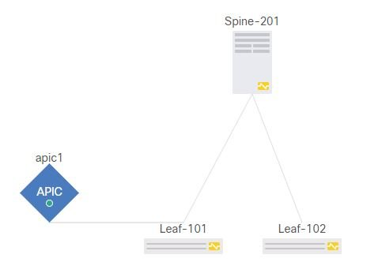
The chain
Infra side: each object points to the one before it, so it is built from the pool upward. Tenant side: objects contain each other, so it is built from the tenant downward. Both sides meet at the physical domain.
- SWP-LEAF101-102nodes 101-102
- IFP-LEAF101-102port 1/45
- IPG-VPC-LEGACYvPC, LACP, MCP
- AAEP-LEGACY
- PD-LEGACY
- VP-LEGACY-HANDOFF310-340
- LAB
- VRF-PROD
- BD-WEB / BD-APP / BD-DB
- AP-NETWORK
- EPG-WEB / EPG-APP / EPG-DBdomain PD-LEGACY
- Static portsvPC, VLAN 310 / 320 / 330
When an EPG asks for VLAN 310 on port 1/45, ACI looks for one domain that is linked to the EPG, is carried by the port's AAEP, and has 310 in its pool. If none exists, nothing is programmed and F0467 is raised.
What is what: ACI objects in switch terms
On a classic switch one VLAN does three jobs: it is the broadcast domain, the group of hosts, and (with an SVI and ACLs) the gateway and the policy point. ACI splits these jobs into separate objects. The VLAN tag on the cable is only how a leaf recognises which group a frame belongs to.
| Object | What it is | Role in the fabric | Closest classic equivalent |
|---|---|---|---|
| Tenant | Admin container | Keeps configuration and admin rights apart. It is not a network and carries no traffic | None. Think of a separate configuration space |
| VRF | Routing table | The IP space. Also the scope where contracts are enforced. Has its own VNID for routed traffic across the fabric | vrf context (NX-OS), routing-instance (Junos), L3 VNI in EVPN |
| Bridge domain (BD) | L2 domain | Where MACs are learned and where floods go. Has its own VNID across the fabric. With a subnet and routing on, it is also the default gateway on every leaf at once | VLAN with a vn-segment (L2 VNI). With a subnet: an SVI with anycast gateway |
| EPG | Group of endpoints | The identity used for policy. A frame joins an EPG by port plus VLAN tag. Each EPG gets a class ID (pcTag) that the contract rules use | The access VLAN seen as a group of hosts. In function close to a security group tag (SGT) |
| Application profile | Folder of EPGs | Only organises EPGs. No effect on forwarding | None |
| Contract, subject, filter | Allowed traffic between EPGs | Allow list: two EPGs in an enforced VRF cannot talk until a contract allows it. Inside one EPG everything is allowed. Compiled on the leaf into rules by pcTag pair | An ACL between groups. Filter = the list of ACEs |
| L3Out and external EPG | Routed link to an outside router | Exchanges routes with the outside. The external EPG groups outside prefixes so contracts can use them | Routed interface or SVI with static routes, BGP or OSPF |
| Access object | What it is | Closest classic equivalent |
|---|---|---|
| VLAN pool | The allowed tags | The switchport trunk allowed vlan list, as a reusable object |
| Physical domain | The permission that joins a pool to EPGs and ports | None. It exists so the infra team and the tenant team can work apart |
| AAEP | The link between port settings and domains | None |
| Interface policy group | Settings of one port or bundle | The interface port-channel block: LACP, MCP, LLDP, CDP |
| Interface profile and selector | Which port numbers get those settings | interface ethernet1/45 |
| Switch profile | Which leaves get the interface profile | Choosing which switch you log in to |
| vPC protection group | The leaf pair | vpc domain, but with no peer link: the pair syncs over the fabric |
What lands on the leaf for EPG-WEB on 1/45: the tag 310 on the vPC (only on the wire), an internal VLAN for the EPG chosen by the leaf and mapped to tag 310, an internal VLAN for BD-WEB mapped to the BD's fabric VNID, and the pcTag of EPG-WEB in the rule table. On the leaf, show vlan extended shows the internal VLANs with their encap and EPG, show endpoint the learned MACs per EPG, and show zoning-rule the contracts as pcTag pairs.
A frame from a legacy host to ACI, phase 1:
1. Host on the legacy side sends a frame tagged 310 into the vPC on 1/45
2. Leaf: port 1/45 + tag 310 -> EPG-WEB (source pcTag)
3. EPG-WEB belongs to BD-WEB -> MAC lookup in BD-WEB
4. MAC known on another leaf -> VXLAN to that leaf, BD-WEB VNID,
source pcTag carried in the header
5. MAC unknown -> flooded in BD-WEB (BD set to Flood)
6. Destination in another EPG -> contract check on the pcTag pair
7. Out of the egress port with that port's tag for the EPG
The tag is local to the port. The same EPG could use another tag on
another port. The lab keeps 310 everywhere to match the legacy side.
| Legacy fabric today | In ACI (this lab) |
|---|---|
| VLAN 310 | EPG-WEB (the group) + BD-WEB (the L2 domain) + static port 1/45 tag 310 |
| IRB / SVI gateway on the legacy router | Stays on the legacy router in phase 1. Later: subnet on BD-WEB (T8) |
| ACL between VLANs on the router | Contract between EPGs (B9-B14) |
| Routing instance | VRF-PROD |
| ESI-LAG or MC-LAG toward ACI | vPC on IPG-VPC-LEGACY (A6-A8) |
What part A puts on the leaf, and what it doesn't
Short answer: yes and no. Access policies are pushed in two different ways, depending on the object. Some objects are rendered on the leaf as soon as the chain is complete. Others are only a permission and do nothing on the hardware until a tenant object uses them. The VLANs are in the second group.
| 1. Pushed as soon as the chain is complete | What you see on the leaf | Why |
|---|---|---|
| vPC explicit protection group (A1) | show vpc brief | The vPC domain forms between the two leaves. There is no peer link: peer communication goes over the fabric, and the pair shares a vPC anycast VTEP IP |
| vPC / PC interface policy group (A6.3), through switch profile, interface profile and selector (A7, A8) | show port-channel summary | The port-channel is created and LACP negotiates |
| Link level, CDP, LLDP, LACP, MCP, storm control | Applied to the physical port | These are properties of the port and the switch. They do not depend on any forwarding policy, so the APIC has everything it needs to render them |
Practical result: the server or network team on the other side can see the bond come up and LACP in sync before any EPG exists. Nothing forwards yet, because the port carries no VLANs.
| 2. Not pushed by themselves: a permission | Role |
|---|---|
| VLAN pool (A3) | The range of encap VLANs that is allowed |
| Physical, L3 or VMM domain (A4) | Links the pool to a scope that EPGs and L3Outs can use |
| AAEP (A5) | Links the domains to the ports, through the policy group |
The VLAN pool does not put VLANs on the trunk. It only says: on the ports behind this AAEP, an EPG in this domain may use VLANs from this range. One exception: an AAEP with Enable Infrastructure VLAN ticked pushes the fabric's infra VLAN to its ports at once. That is why A5 leaves it off toward the legacy fabric.
| 3. What actually puts a VLAN on the vPC | Where in this guide |
|---|---|
| The EPG is linked to the domain (EPG > Domains) | B6 |
| And one of these exists: a static path binding (EPG > Static Ports, vPC path + encap VLAN) | B7 |
| or an EPG binding on the AAEP, which pushes the VLAN to every port that uses that AAEP | T3 |
| or VMM integration, where the APIC learns from the hypervisor manager where the VMs are | Not in this lab |
When the VLAN is programmed is set by Deployment Immediacy: on the static port (B7) Immediate programs it at once, On Demand waits for the first endpoint. Resolution Immediacy only matters for VMM domains. Before anything is programmed, the APIC checks the chain: is this VLAN in a pool, in a domain that the EPG is linked to, and is that domain on the AAEP of this port? If a link is missing, the VLAN is not deployed and fault F0467 is raised on the EPG (invalid-vlan, invalid-path). This is the most common error in a new build. The usual causes are a VLAN outside the pool, or the EPG linked to a different domain than the one on the AAEP. A clash with an encap that is already in use is often refused at once with a 400 error and nothing is saved (T2); when the clash is only found while rendering on the leaf, it shows as F0467 instead (section D).
| 4. Why ACI is built this way | |
|---|---|
| Fabric admin (access policies) | "These ports can carry VLANs 310-340 for this domain." |
| Tenant admin | "My EPG uses VLAN 310 on this vPC." |
The two roles are separated on purpose. The tenant cannot use a VLAN or a port that the infra team did not allow: domains and AAEPs are the boundary between infra and tenants, and security domains add the admin-rights boundary on top. There is also a resource reason: the leaf programs VLANs and policy TCAM only where an EPG really needs them, not for the whole pool range.
A. Access policies
What is allowed on each physical port: VLANs, LACP, MCP. No subnets and no EPGs here. A1 and A2 are done once for the fabric; A3 to A9 are repeated for every external device.
Fabric-wide, once per leaf pair
vPC protection group
leafs_1-2fabricExplicitGEp
WhereFabric > Access Policies > Policies > Switch > Virtual Port Channel default
Defines which two leaves are a vPC pair. Build it first: a vPC policy group can only come up as a vPC on two leaves that are already an explicit pair. It is made once per leaf pair and reused by every vPC on those leaves (the handoff here, the firewall in T7, servers later). Nothing points to it: ACI matches the pair by node IDs when a vPC policy group lands on both leaves. No peer link: the leaves sync over the fabric.
| Field | Value | Why |
|---|---|---|
| Pairing Type | explicit | You name the two leaves. There is no automatic pairing in ACI |
| Switches | 101, 102 | A leaf can be in only one pair |
| Logical pair ID | 12 | The vPC domain ID |
| Virtual IP | From the TEP pool (10.0.192.64/32 in this run) | Shared (anycast) TEP of the pair. Remote leaves send VXLAN for endpoints behind the vPC to this address |
| Domain policy | leafs_1-2 | Points to the vPC domain policy (timers) under Policies > Switch > VPC Domain |
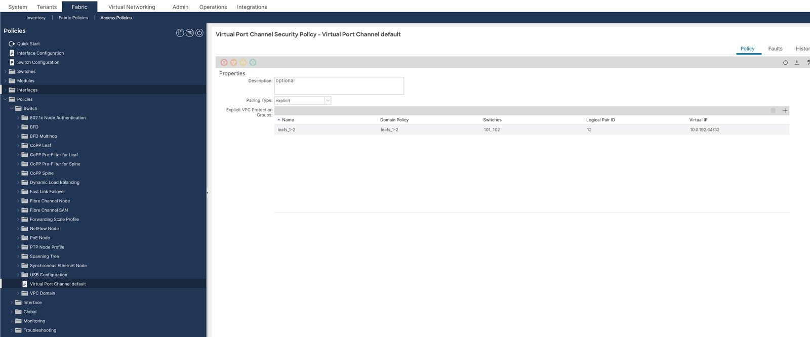
MCP global policy
defaultmcpInstPol
WhereFabric > Access Policies > Policies > Global > MCP Instance Policy default
Turns on the Mis-Cabling Protocol for the whole fabric, once. Without it, MCP-ON on any port (A6.2) does nothing. ACI runs no STP. MCP sends its own frames out of a port; if they come back, a loop exists outside and the port is shut.
| Field | Value | Why |
|---|---|---|
| Admin state | Enabled | Without it, MCP on ports does nothing |
| Key / Confirm Key | A lab-only word, typed twice | Marks frames from this fabric. Without a key MCP is not active |
| Enable MCP PDU per VLAN (global) | Off | Set per VLAN on the interface policy instead (A6.2), only where needed |
| Loop detect multiplication factor | 3 | Frames received before action |
| Loop protection action | Port Disable | Unticked = log only |
| Initial delay | 180 s | 0 if the legacy side runs no STP, otherwise longer than STP convergence. Open design question |
| Transmission frequency | 2 s, msec 0 | Two fields: seconds plus milliseconds. 2 s x factor 3 = detection in about 6 s |
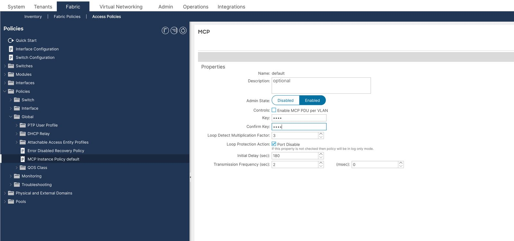
Per handoff (repeat for every external device)
VLAN pool
VP-LEGACY-HANDOFFfvnsVlanInstP
WhereFabric > Access Policies > Pools > VLAN
The list of VLAN tags that may be used toward the legacy fabric. On its own it does nothing: no port and no EPG uses it until a domain points to it.
| Field | Value | Why |
|---|---|---|
| Name | VP-LEGACY-HANDOFF | Named after the purpose, not the numbers. Ranges grow, the purpose stays |
| Allocation mode | Static | You choose the VLAN per port (static binding). Dynamic is only for VMM, where the APIC also configures the far end |
| Encap block | 310-340, "Inherit allocMode from parent", role "External or On the wire encapsulations" | The block takes the pool's mode (static). External = VLAN tags that appear on the cable. Internal is for tags the fabric uses for itself |
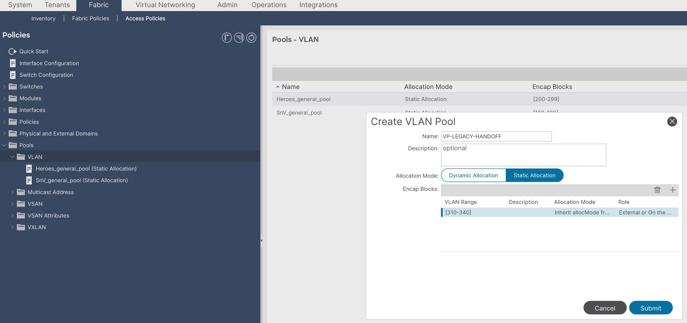
Physical domain
PD-LEGACYphysDomP
WhereFabric > Access Policies > Physical and External Domains > Physical Domains
The rulebook between the infra team and the tenant team: these VLAN tags may be used by whoever is linked to this domain. The EPG and the port (through its AAEP) both point to it.
| Field | Value | Why |
|---|---|---|
| Name | PD-LEGACY | Part of the DN, cannot be renamed |
| VLAN pool | VP-LEGACY-HANDOFF | One domain has exactly one pool (with many VLANs) |
| AAEP | Leave empty when creating | The link is made from the AAEP side in step A5 and then shows here |
| Security domains | Empty | Access control for admin users (who may see the domain), not forwarding |
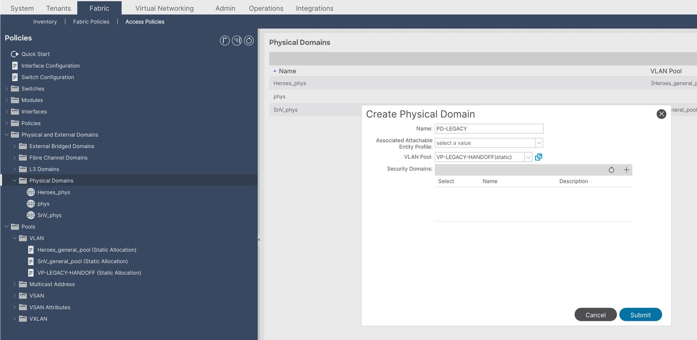
AAEP
AAEP-LEGACYinfraAttEntityP
WhereFabric > Access Policies > Policies > Global > Attachable Access Entity Profiles
The hub between port bundles and domains. Many policy groups point to one AAEP, and one AAEP can carry many domains. Add a domain once, and every port behind the AAEP may use it.
| Field | Value | Why |
|---|---|---|
| Name | AAEP-LEGACY | Named after what is connected |
| Enable Infrastructure VLAN | Off | Never extend the fabric's internal VLAN to a third-party switch |
| Domains | + PD-LEGACY (Physical), then Update, then Finish | The Update click inside the row is easy to miss. Without it the row is discarded. The row then shows the encapsulation from:vlan-310 to:vlan-340, read from the pool behind the domain |
| Association to Interfaces | Unticked | The wizard would create policy groups and profiles with its own names. Link from the policy group instead (A6.3) |
| EPG deployment | Empty | Pushes an EPG to all ports of the AAEP. Toward the legacy fabric use explicit static bindings |
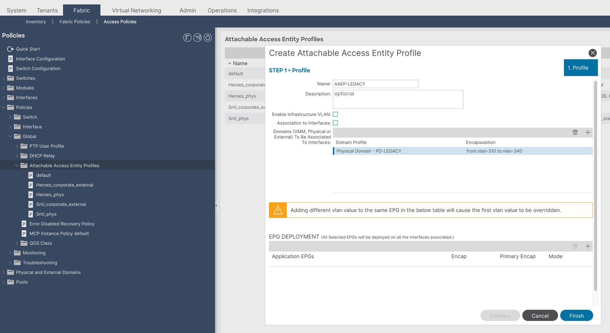
vPC interface policy group and its interface policies
A policy group is a bundle of interface settings for one logical link. Build the two interface policies first (A6.1, A6.2), then the group that points to them (A6.3). They are reusable: every bundle with the same needs uses the same LACP-ACTIVE and MCP-ON, for example the firewall bundle in T7. Both can also be created straight from the dropdowns of the policy group dialog.
Port channel policy
LACP-ACTIVElacpLagPol
WhereFabric > Access Policies > Policies > Interface > Port Channel
How the links negotiate the bundle with the legacy switches. A building block that the vPC policy group uses.
| Field | Value | Why |
|---|---|---|
| Mode | LACP Active | ACI starts the negotiation. Passive on both sides never forms. Mode On has no protection against miscabling |
| Control | Suspend Individual Port, Graceful Convergence, Fast Select Hot Standby | Suspend individual: a link without LACP is shut instead of forwarding alone. This is the key flag toward an external L2 network |
| Min / max links | 1 / 16 | Defaults |
| Load Balancing | Static | Default. Static = the normal hash per flow. Dynamic spreads traffic by link load and depends on the hardware; not needed for the lab |
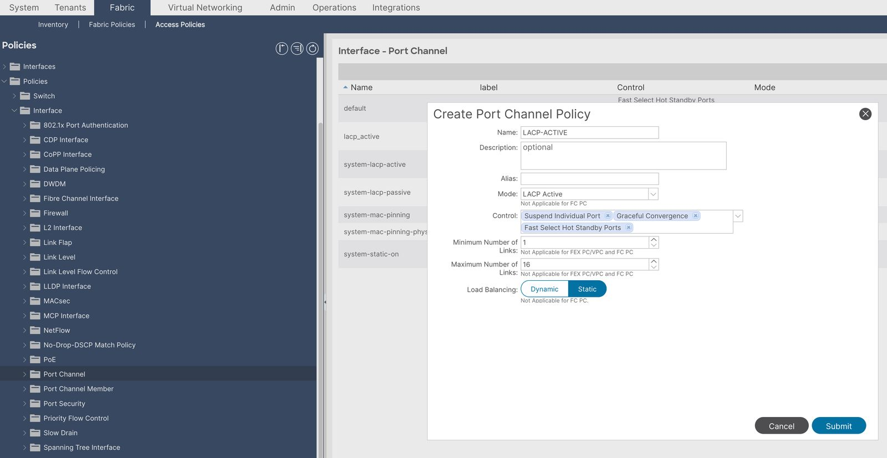
MCP interface policy
MCP-ONmcpIfPol
WhereFabric > Access Policies > Policies > Interface > MCP Interface
Turns MCP on per port, through the policy group.
| Field | Value | Why |
|---|---|---|
| Admin state | Enabled | |
| MCP PDU per VLAN | Enabled | The handoff is a tagged trunk. An untagged MCP frame may not cross the legacy fabric, so a loop inside VLAN 310 would not be seen |
| Maximum number of VLANs | 256 | Scale limit for per-VLAN MCP. Check the Verified Scalability Guide |
| Mode | Non-strict | Strict mode: verify the behaviour in the Cisco docs before using it |
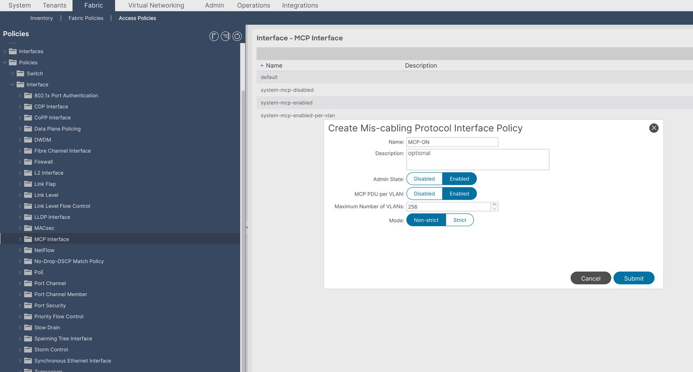
vPC interface policy group
IPG-VPC-LEGACYinfraAccBndlGrp
WhereFabric > Access Policies > Interfaces > Leaf Interfaces > Policy Groups > VPC Interface
The settings bundle for one logical link: the vPC toward the legacy spine pair. One external pair = one policy group. Sharing it would merge two neighbours into one bundle.
| Field | Value | Why |
|---|---|---|
| Name | IPG-VPC-LEGACY | IPG, not IGP. Named after the device on the other end |
| Link aggregation type | No field: create under VPC Interface | The folder sets the type. VPC Interface stores lagT=node, PC Interface stores lagT=link |
| Attached Entity Profile | AAEP-LEGACY | Link to the domain and VLANs |
| Port Channel Policy | LACP-ACTIVE | Not lacp_active or system-lacp-active: the names look alike in the dropdown |
| CDP, LLDP, Link Level | Empty | Empty = the default policy is used (LLDP on, CDP off, speed auto) |
| MCP Policy (step 2, Advanced Policies) | MCP-ON | The wizard has two steps. MCP is only on the second |
| VPC Member Port Policy Groups (step 2) | Empty | This is where a Port Channel Member policy sets the LACP rate (fast or normal) per member port |
| STP Interface Policy | Empty (default) | Never BPDU Guard toward the legacy switches: they send BPDUs |
| Storm control | Empty in the lab, worth setting in production | It carries all flooded traffic between the fabrics |
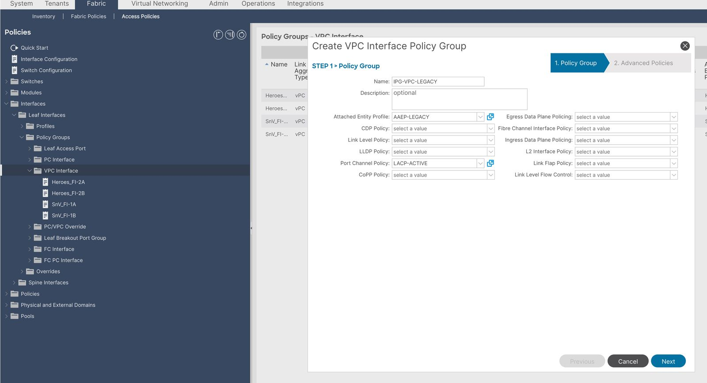
Leaf interface profile and port selector
IFP-LEAF101-102infraAccPortP / infraHPortS
WhereFabric > Access Policies > Interfaces > Leaf Interfaces > Profiles
Which port gets which bundle. The selector is created inside the profile (+ in Interface Selectors). The profile is a template: nothing lands on a leaf until a switch profile points to it.
| Field | Value | Why |
|---|---|---|
| Profile name | IFP-LEAF101-102 | IFP = interface profile. An earlier rebuild named it SWP by mistake |
| Selector name | LEGACY-HANDOFF | Names what is cabled |
| Interface IDs | 1/45 | Card/port only, no leaf ID: the profile does not know which leaves it is on. Check first that no other selector uses 1/45 |
| Connected To Fex | Unticked | Only for ports on a FEX |
| Interface policy group | IPG-VPC-LEGACY | The selector points to the policy group |
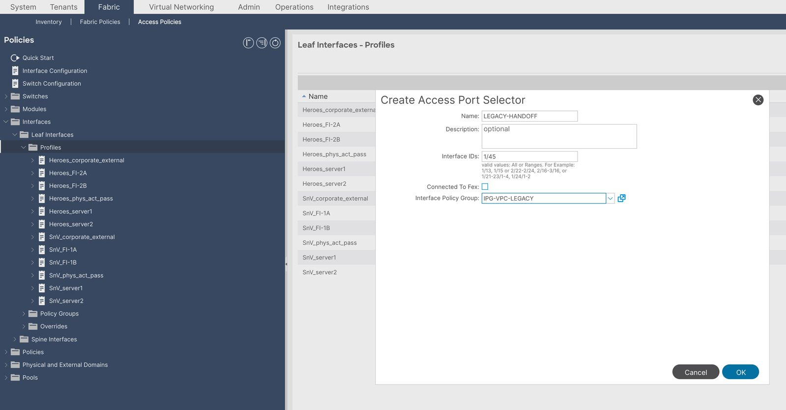
Leaf switch profile
SWP-LEAF101-102infraNodeP
WhereFabric > Access Policies > Switches > Leaf Switches > Profiles
Which leaves get the interface profile. This is the moment the configuration lands on the switches.
| Field | Value | Why |
|---|---|---|
| Name | SWP-LEAF101-102 | |
| Leaf selector (step 1) | LEAF101-102, blocks 101-102, then Update in the row | Same two nodes as the protection group, or no vPC. Next stays grey until the row is updated |
| Switch policy group (in the row) | Empty | Leaf-wide policies (for example BFD, CoPP). Defaults are fine for the lab |
| Interface Selector Profiles (step 2) | Tick IFP-LEAF101-102, Module Selector empty, then Finish | State must show Formed |
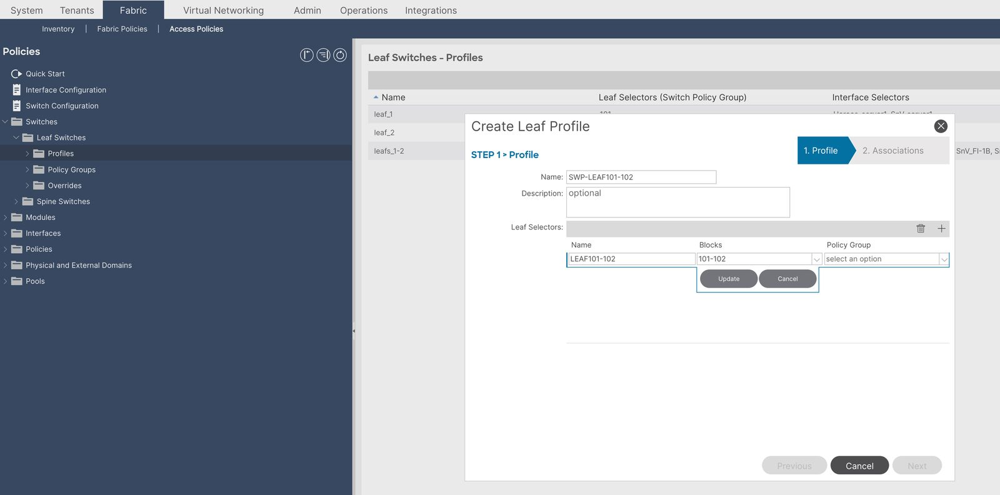
Check the infra chain
Show Usage on PD-LEGACY
WherePD-LEGACY > Show Usage
One screen that checks the whole infra side. The domain reaches leaves 101 and 102 only if every link below it resolves.
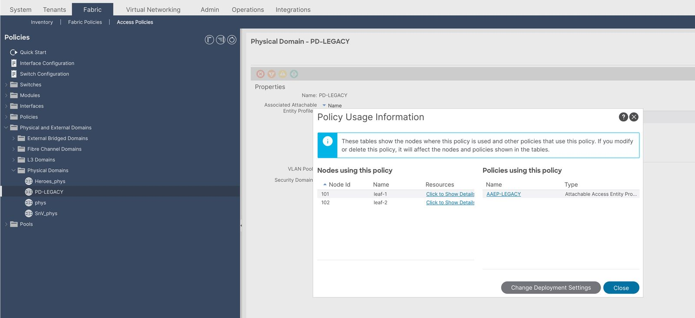
B. Tenant
The networks (BD), the groups (EPG) and which VLAN on which port maps into them.
Tenant and VRF
LAB / VRF-PRODfvTenant / fvCtx
WhereTenants > Add Tenant. The Create Tenant dialog has a VRF Name field, so one dialog creates both
The tenant is an administrative container, not a network. The VRF is needed as the parent of every BD, even with routing off: it is the future routing home when gateways move from the legacy router.
| Field | Value | Why |
|---|---|---|
| Tenant | LAB | |
| VRF Name (in Create Tenant) | VRF-PROD | Created with defaults: policy enforcement Enforced, and no BD. If you create the VRF separately under Networking > VRFs instead, untick 'Create a bridge domain' |
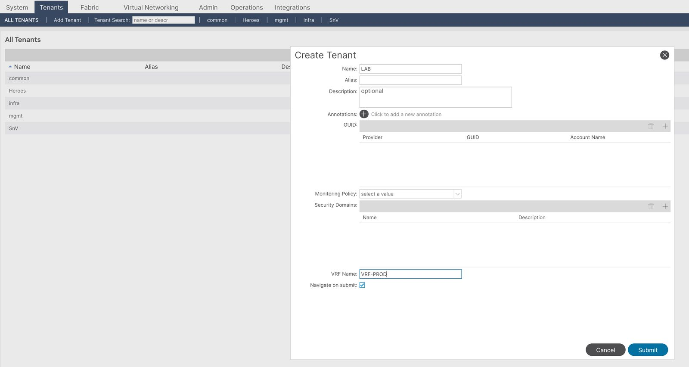
Bridge domains
BD-WEB, BD-APPfvBD
WhereTenant > Networking > Bridge Domains
The L2 network (its own VNID inside the fabric). Phase 1 settings make ACI behave like a plain L2 switch toward the legacy fabric, with the gateway still on the legacy router.
| Field | Value | Why |
|---|---|---|
| VRF | VRF-PROD | Required parent |
| Forwarding | Custom | Optimize = hardware proxy, which drops traffic to MACs ACI has not learned (hosts behind the legacy fabric) |
| L2 unknown unicast | Flood | Appears only after Forwarding is set to Custom |
| L3 Unknown Multicast Flooding | Flood (default) | No multicast routing in phase 1 |
| Multi Destination Flooding | Flood in BD (default) | Floods to all EPGs of the BD. Flood in Encapsulation would limit it to one VLAN, see section D |
| ARP flooding | On | ARP must reach the gateway on the legacy router. Forced on when routing is off. With Custom it sits on page 1. Page 2 then shows it greyed and ticked: with Unicast Routing off it cannot be turned off |
| Clear Remote MAC Entries | On | Directly under ARP Flooding. When a server moves from the legacy fabric to ACI, remote leaves flush the old entry at once |
| Unicast routing | Off | Gateway stays on the legacy router. ACI learns MACs only |
| Subnets | None | A subnet would make ACI a second gateway |
| Page 3 | Defaults | Drop ARP with multicast SMAC on |
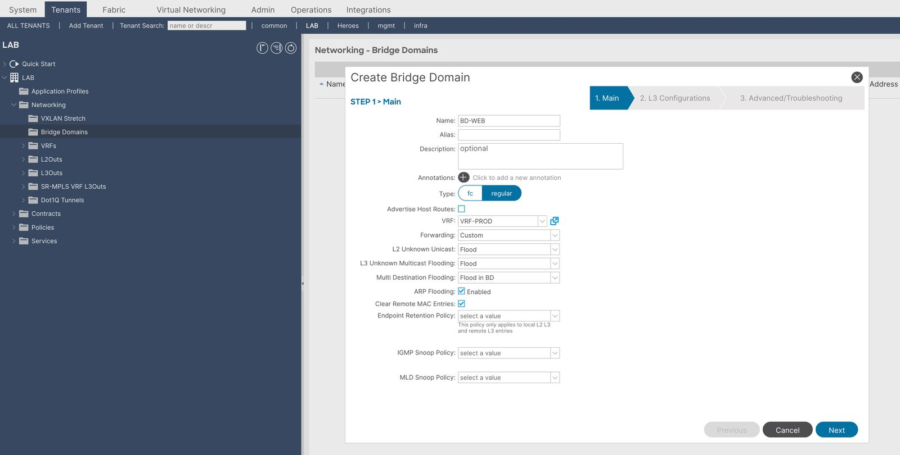
Check the networks view
Tenant > Networking
WhereTenant LAB > Networking
A picture of the tenant's network structure.
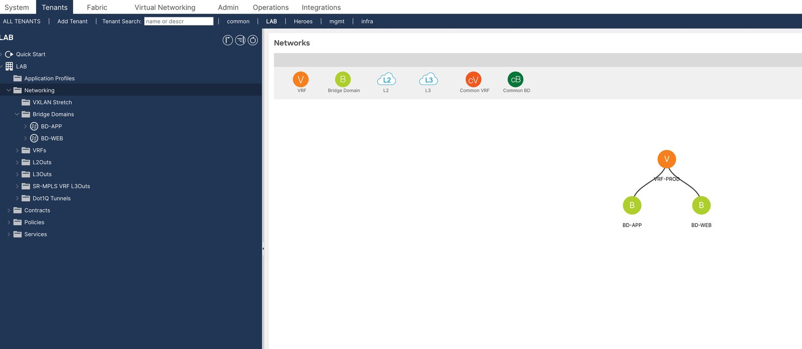
Application profile
AP-NETWORKfvAp
WhereTenant > Application Profiles
A folder for EPGs. In a network-centric design one profile holds all VLAN EPGs.
| Field | Value | Why |
|---|---|---|
| Name | AP-NETWORK | |
| EPGs table | Leave empty | The inline table only offers BD, domain, static path and contracts. Isolation, preferred group and admin state are missing. Create EPGs separately to see every field |
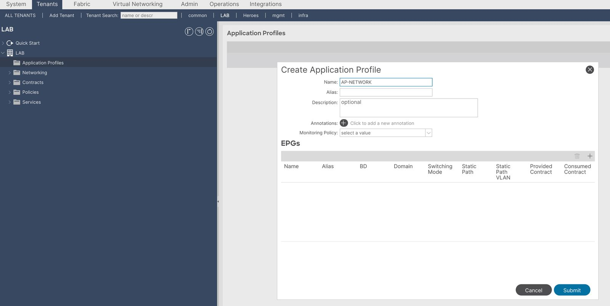
EPG
EPG-WEBfvAEPg
WhereTenant > Application Profiles > AP-NETWORK > Application EPGs
The group of endpoints that get the same policy, like an SGT group. Network-centric: 1 VLAN = 1 EPG = 1 BD.
| Field | Value | Why |
|---|---|---|
| Bridge domain | BD-WEB | |
| Intra EPG isolation | Unenforced | Enforced = members cannot talk to each other (private VLAN style) |
| QoS class, Contract Exception Tag, EPG Contract Master | Level3 (Default), empty, empty | Defaults. Contract Master lets an EPG inherit contracts from another EPG; not used here |
| Preferred group member | Exclude | |
| Flood in Encapsulation | Disabled | Flooding stays BD-wide. Enabled limits it to this EPG's VLAN, see section D |
| EPG admin state | Admin Up | For a real cutover: create as Admin Shut, attach the vPC, confirm LACP bundled, then Admin Up |
| VM domain / static link boxes | Unticked | Domain and static port are added as separate steps |
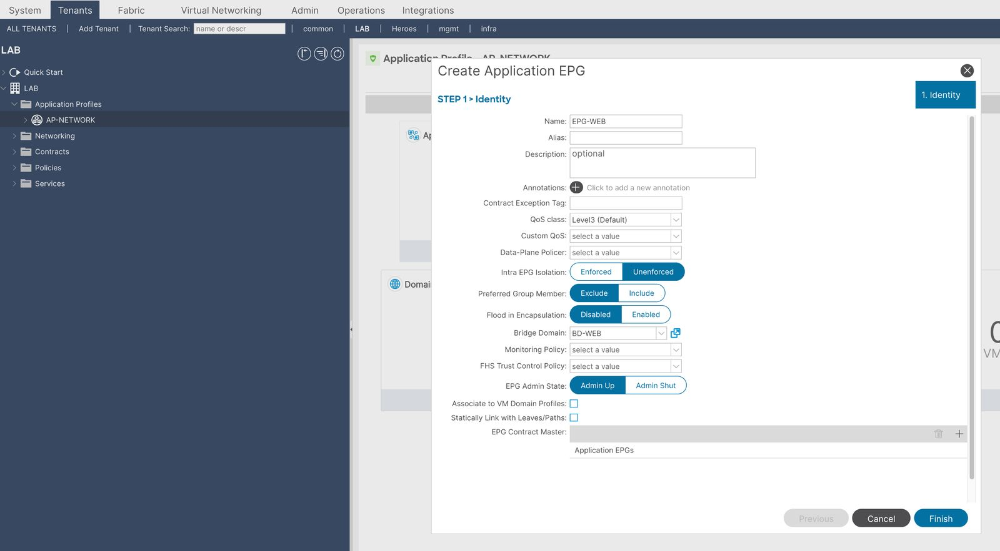
Domain on the EPG
PD-LEGACYfvRsDomAtt
WhereEPG-WEB > Domains (VMs and Bare-Metals) > Add Physical Domain Association
The tenant side takes the infra permission. Check 1 of 3: the EPG is linked to a domain.
| Field | Value | Why |
|---|---|---|
| Physical domain | PD-LEGACY |
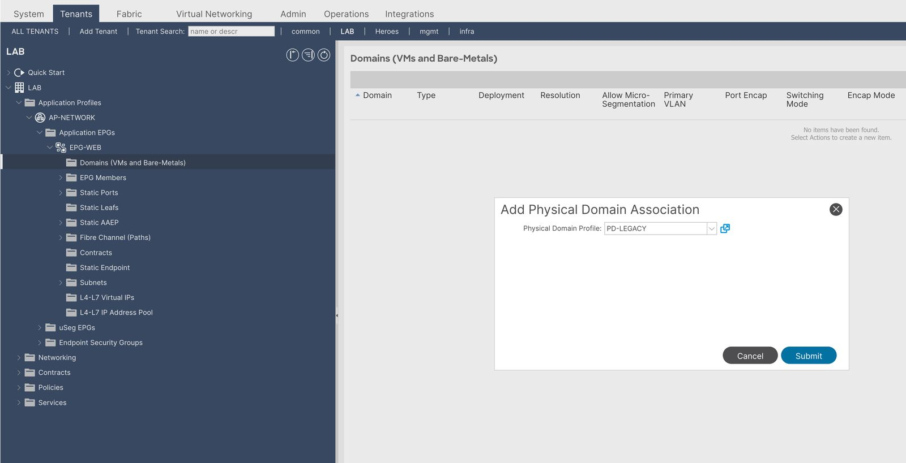
Static port
vPC path, VLAN 310fvRsPathAtt
WhereEPG-WEB > Static Ports > Deploy Static EPG on PC, VPC, or Interface
The intent: VLAN 310 on the legacy vPC belongs to EPG-WEB. Bind to the bundle, never to a member port.
| Field | Value | Why |
|---|---|---|
| Path type | Virtual Port Channel | The path only appears after the infra chain has landed on both leaves |
| Path | IPG-VPC-LEGACY | Stored as topology/pod-1/protpaths-101-102/pathep-[IPG-VPC-LEGACY] |
| Port encap | VLAN 310 | Check 2: in the pool of the EPG's domain |
| Deployment immediacy | Immediate | Stored as immediate. On Demand = lazy |
| Mode | Trunk | Stored as regular. Trunk (Native) = native, Access (Untagged) = untagged |
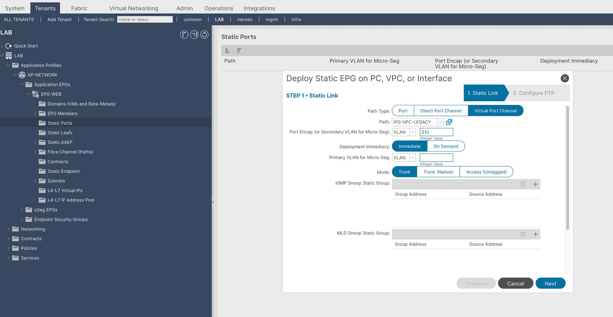
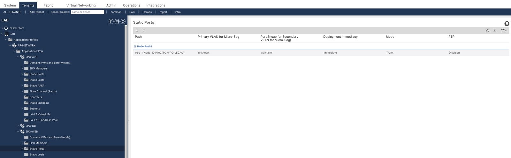
Second EPG
EPG-APPfvAEPg
WhereAP-NETWORK > Application EPGs (same as B5 to B7)
The second VLAN from the lab data (320, the application tier). Same pattern as EPG-WEB: its own BD, the same domain and the same vPC path. Every migrated legacy VLAN adds one more EPG and one more static port on the same handoff.
| Field | Value | Why |
|---|---|---|
| Application profile | AP-NETWORK | APP is the VLAN name, not the application profile |
| Bridge domain | BD-APP | |
| Domain | PD-LEGACY | Before the static port |
| Static port | vPC IPG-VPC-LEGACY, VLAN 320, Immediate, Trunk | The same two cables (eth1/45 on 101 and 102), a different VLAN tag |
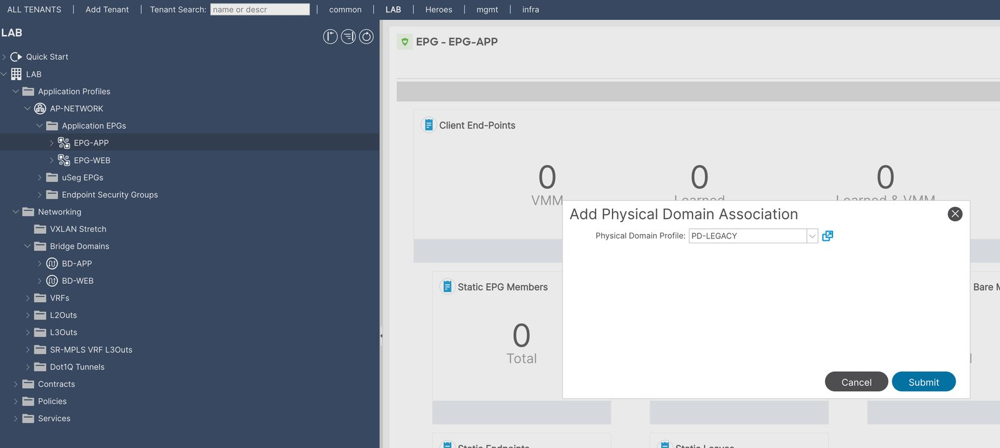
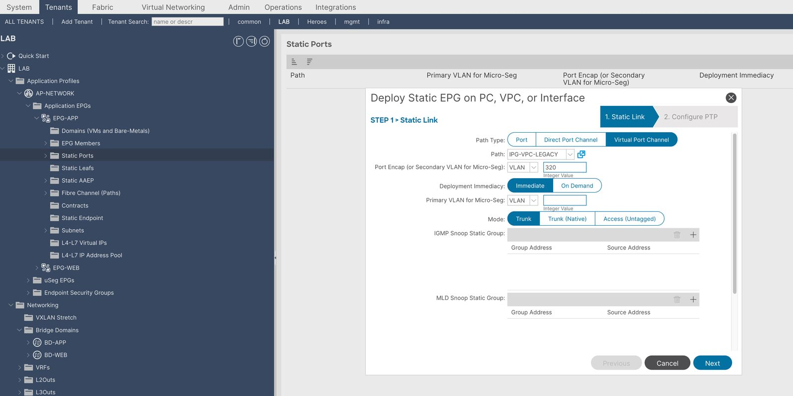
Filter
FLT-TCP-8443vzFilter / vzEntry
WhereTenant > Contracts > Filters
What traffic to match. The match part of an ACL line, reusable by many contracts.
| Field | Value | Why |
|---|---|---|
| Entry | TCP-8443 | |
| EtherType / protocol | IP / tcp | |
| Destination port | 8443 to 8443 | The service port on the provider |
| Source port | unspecified | Clients use random source ports |
| Stateful | True | Return traffic only with TCP ACK set: the provider cannot open new sessions. Not a real firewall |
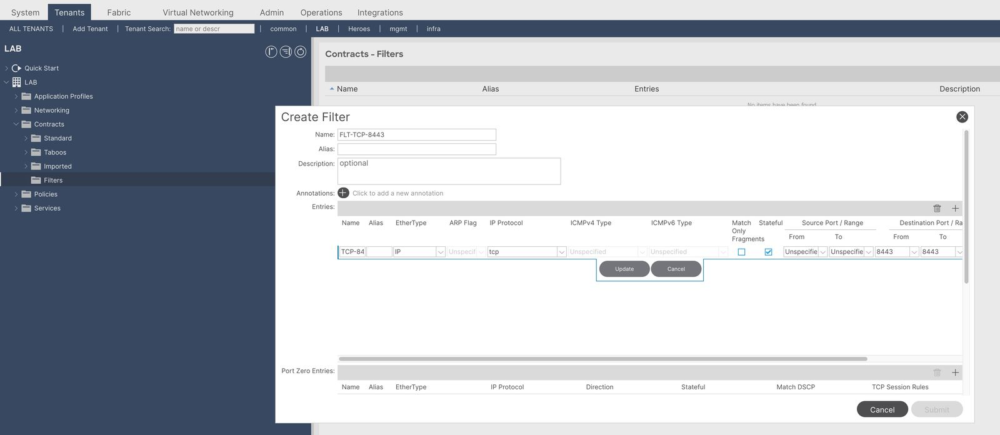
Contract and subject
CON-WEB-TO-APPvzBrCP / vzSubj
WhereTenant > Contracts > Standard
The container for the rules. Like an SGACL in TrustSec: contracts are enforced between EPG class IDs (pcTags), not IP addresses, on the leaves only.
| Field | Value | Why |
|---|---|---|
| Scope | VRF | Which provider and consumer pairs it applies to. Always check it: a wide scope on a shared contract is a segmentation hole |
| Subject | SUBJ-TCP-8443 | |
| Apply both directions | On | |
| Reverse filter ports | On | ACI adds the mirror rule (source port 8443) for return traffic |
| Filter | FLT-TCP-8443, permit, default priority | State should show Formed |
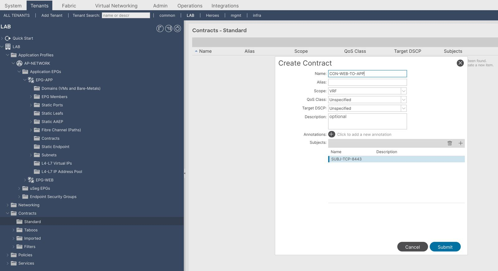
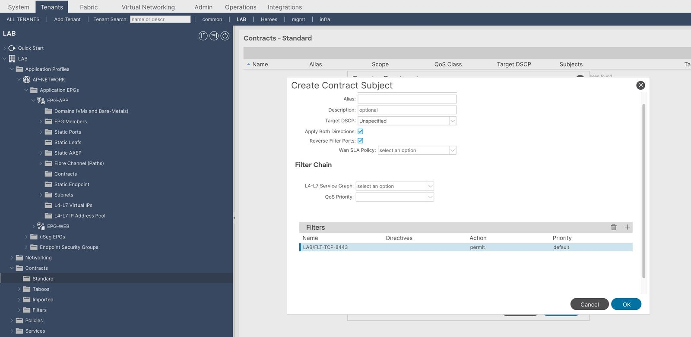
Provider and consumer
APP provides, WEB consumesfvRsProv / fvRsCons
WhereEPG > Contracts > Add Provided Contract / Add Consumed Contract
Provider = the server side, which listens on the port. Consumer = the client side, which opens the connection. The roles follow the real traffic flow, not the EPG names. In the three-tier model the web tier listens for users, but toward the app tier it is the client.
| Field | Value | Why |
|---|---|---|
| EPG-APP | Provided: CON-WEB-TO-APP | The APP tier listens on its API port 8443 |
| EPG-WEB | Consumed: CON-WEB-TO-APP | The WEB tier calls the API |
| QoS, Contract Label, Subject Label | Unspecified, empty, empty | Labels restrict subjects to some provider and consumer pairs. Not needed |
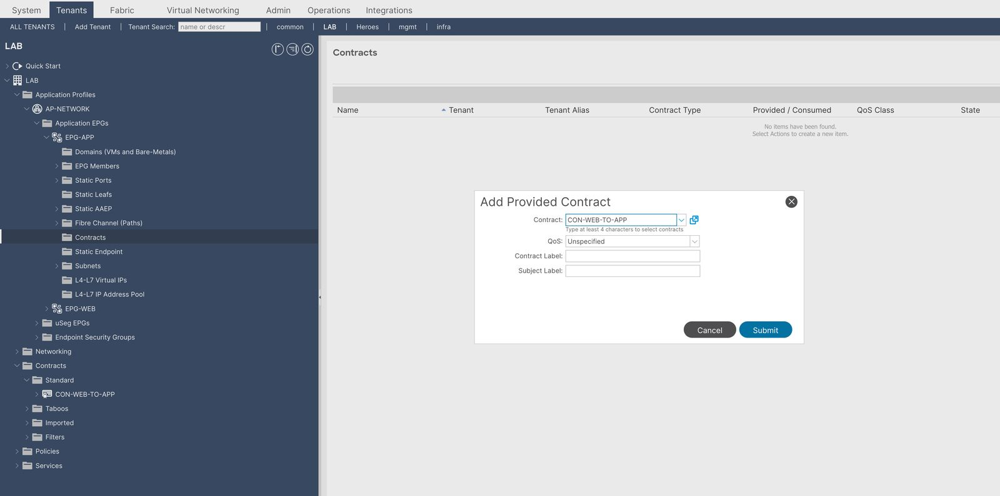
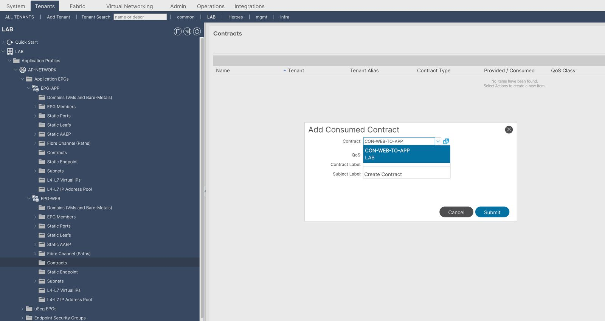
Third tier: BD-DB and EPG-DB
BD-DB / EPG-DBfvBD / fvAEPg / fvRsPathAtt
WhereNetworking > Bridge Domains, then AP-NETWORK > Application EPGs (same as B2, B5 to B7)
VLAN 330, the database tier. The same pattern a third time: L2 BD, EPG in AP-NETWORK, domain first, then the static port on the same vPC. This is exactly what the per-VLAN script will repeat for every migrated legacy VLAN.
| Field | Value | Why |
|---|---|---|
| BD | BD-DB in VRF-PROD: Custom, Flood, ARP flooding, Clear Remote MAC on, routing off, no subnet | Same L2 settings as BD-WEB and BD-APP |
| EPG | EPG-DB in AP-NETWORK, BD-DB | |
| Domain | PD-LEGACY | Added before the static port, so no F0467 on creation |
| Static port | vPC IPG-VPC-LEGACY, VLAN 330, Immediate, Trunk | Check that Immediate is selected before Submit. Some APIC versions open the dialog with On Demand |
| Class ID (pcTag) | WEB 49155, APP 32771, DB 16388 (this run) | All three EPGs at once: click the Application EPGs folder, column Class ID. Per EPG: the EPG page, field pcTag(sclass). The numbers change between builds. Above 16385 = local range, unique inside the VRF only. 16 to 16384 is the global range, used when a contract crosses VRFs |
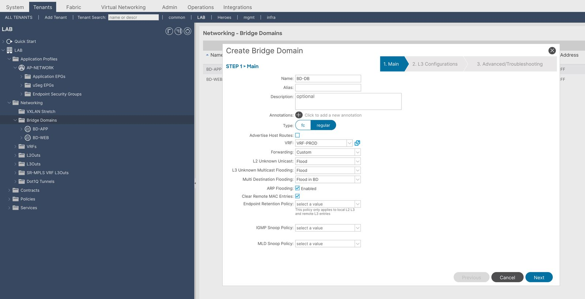
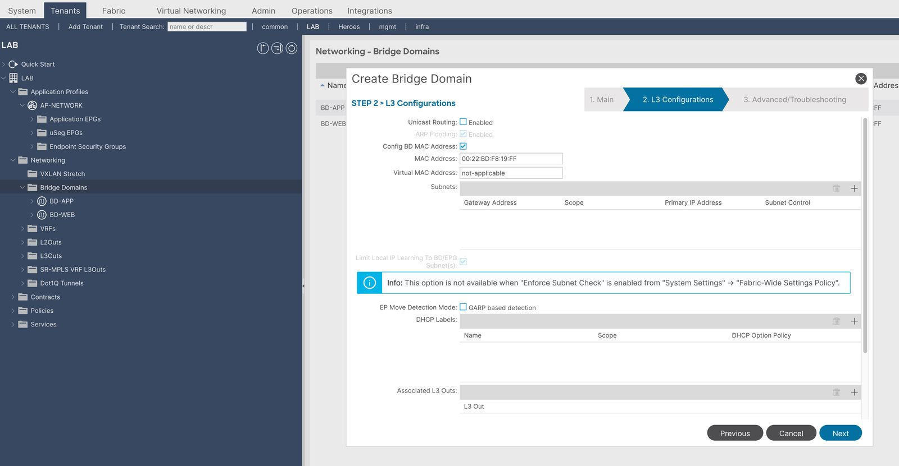
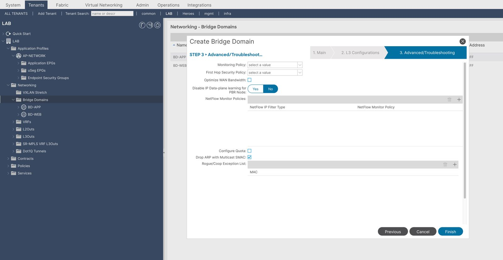
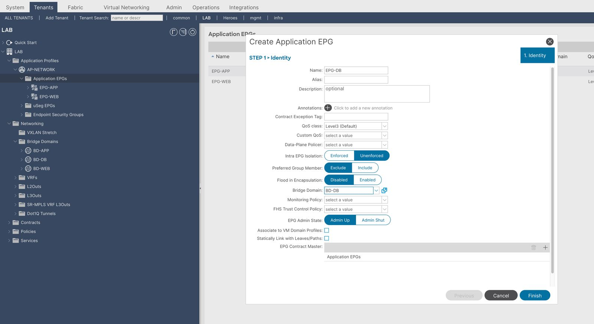
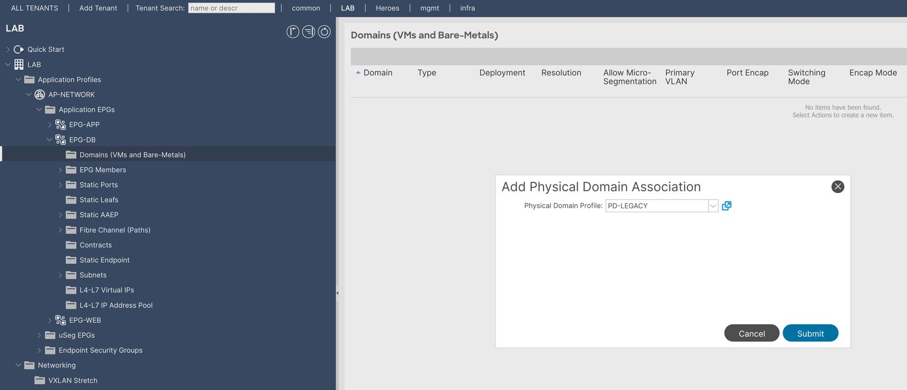
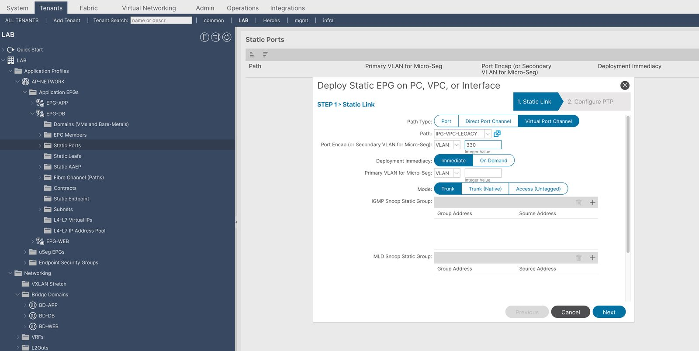
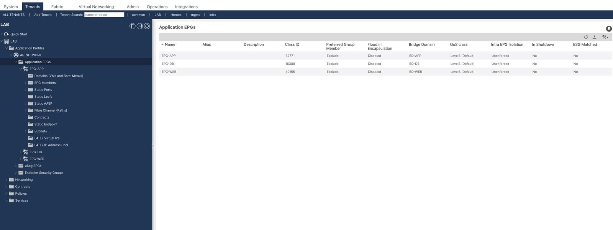
Filter for the DB port
FLT-TCP-1433vzFilter / vzEntry
WhereTenant > Contracts > Filters (same as B9)
Match TCP to destination port 1433, the port the SQL server listens on.
| Field | Value | Why |
|---|---|---|
| Entry | TCP-1433 | |
| EtherType / protocol | IP / tcp | |
| Destination port | 1433 to 1433 | The service port on the provider (DB) |
| Source port | unspecified | The APP server picks a random source port |
| Stateful | True | Return traffic only with ACK set |
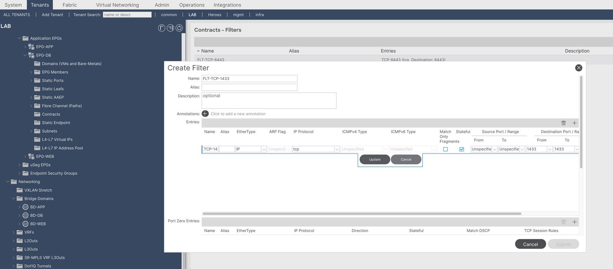
Contract APP to DB
CON-APP-TO-DBvzBrCP / vzSubj / fvRsProv / fvRsCons
WhereTenant > Contracts > Standard, then EPG > Contracts
The second contract of the chain. EPG-APP now has two roles: provider toward WEB, consumer toward DB. It is the server for one tier and the client for the next.
| Field | Value | Why |
|---|---|---|
| Scope | VRF | Both EPGs are in VRF-PROD |
| Subject | SUBJ-TCP-1433, both directions, reverse filter ports | Without reverse ports the DB replies would be dropped |
| Filter | FLT-TCP-1433, permit | |
| EPG-DB | Provided: CON-APP-TO-DB | DB listens on 1433 |
| EPG-APP | Consumed: CON-APP-TO-DB, and still Provided: CON-WEB-TO-APP | Middle tier, two roles |
| EPG-WEB | Consumed: CON-WEB-TO-APP only | No contract to DB: WEB to DB hits the implicit deny |
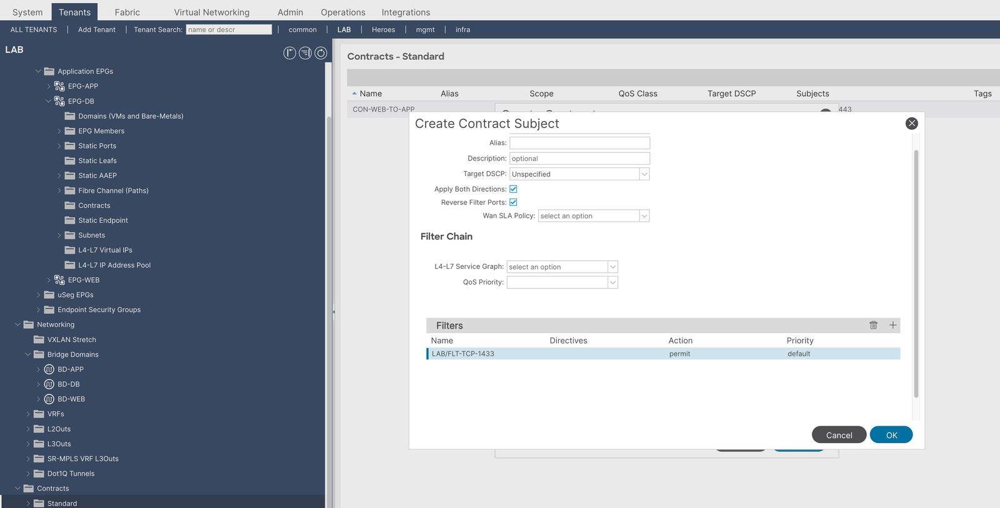
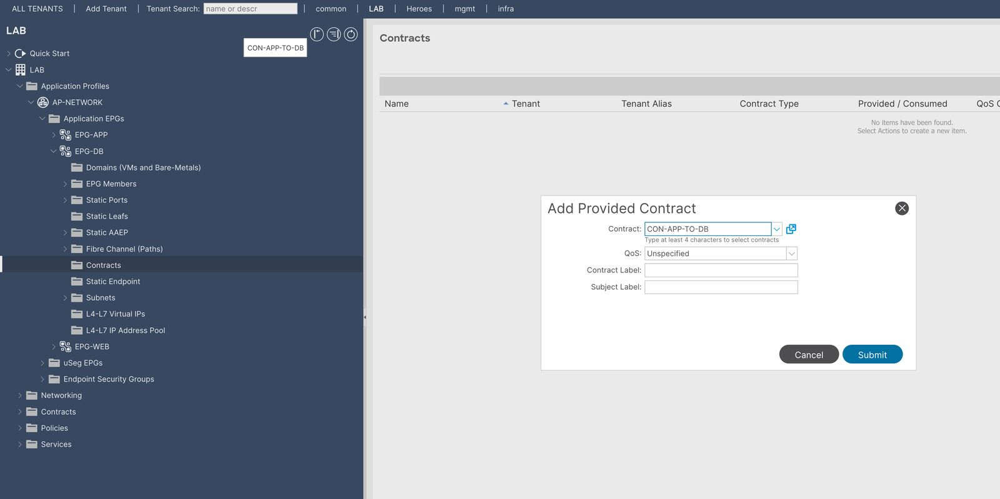
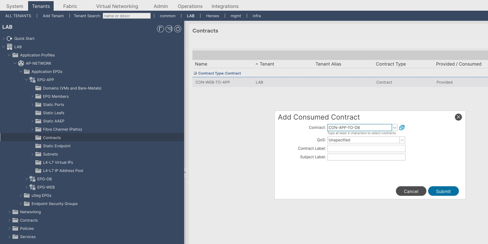
- Usersconsumer
- WEBprovides 443
- APPprovides 8443
- DBprovides 1433
Each tier listens only for the tier in front of it. WEB consumes from APP, APP consumes from DB. The DB is never reachable from WEB directly.
C. Final checks
Check both the port and the EPG. The Deployed EPGs list alone is not proof: an EPG can be listed on a port while its VLAN failed. Always read the EPG faults too.
| Check | Expected | Where |
|---|---|---|
| Port usage | epg | Inventory > leaf-1 > Interface > 1/45 > Operational. Was "discovery" before the binding |
| Switching state | enabled | Same page |
| Deployed EPGs | EPG-WEB, EPG-APP, EPG-DB | Same page, Deployed EPGs tab. Press refresh, the view does not update itself |
| EPG faults | no F0467 | Each EPG > Faults. Old faults show Retaining after a fix |
| Leaf faults | only SnV eth1/10 | Inventory > leaf-1 > Faults. Open F0467 and read each affected object: SnV eth1/10 is the sandbox's own bug. Filter Domain Tenant + Type Config for change-related faults |
| BD segment and multicast | One VNID and one group per BD | Networking > Bridge Domains list. Segment = the BD's fabric VNID. Multicast Address = the group used to flood the BD across the fabric. Flood, ARP flooding True, Unicast Routing False, no subnet |
| Contract | WEB consumes, APP both, DB provides | Each EPG > Contracts. WEB has no contract to DB |
| Binding objects | vlan-310, vlan-320, vlan-330 | APIC CLI: moquery -c fvRsPathAtt (filter to LAB) |
The Operational and Allowed VLANs lists on the port show internal leaf VLAN IDs, not 310. Oper state stays down in the simulator: nothing is cabled. Tenant health 94 comes from major duplicate IP faults (an address such as 2222::65:5 on several MACs in both EPGs): most likely endpoints the simulator invents, since BDs without routing learn MACs only. On a real fabric the same fault means two hosts claim one IP, worth knowing during migration.
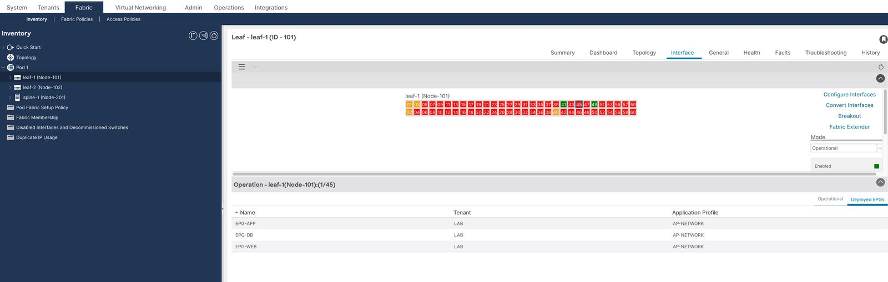
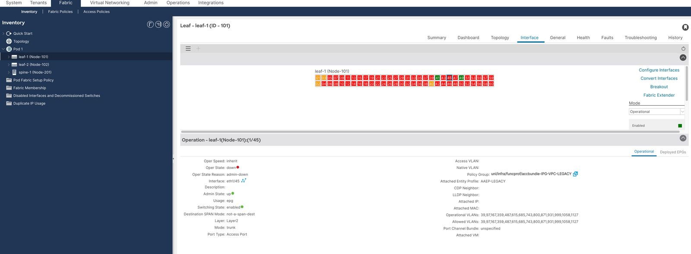
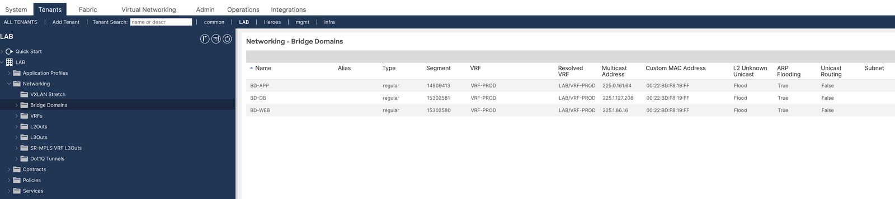
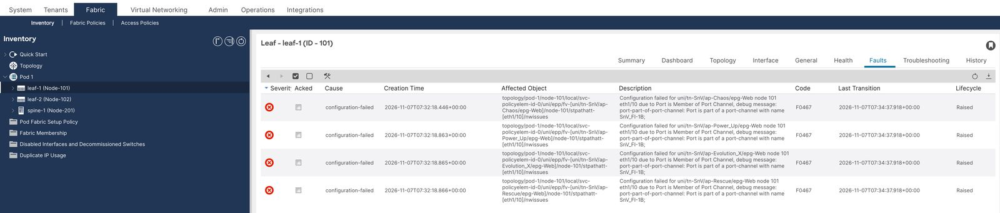
D. Faults and mistakes
Every problem in the rebuilds showed up as a fault or an empty field. Read the fault description: it names the broken link.
| F0467 text says | Broken link | Fix |
|---|---|---|
| There is no domain, associated with both EPG and Port, that has required VLAN | Any of the three checks | EPG domain, AAEP domain list, domain pool |
| invalid-vlan: the domain does not have this vlan assigned | Domain to pool, or VLAN outside the block | A3, A4 |
| invalid-path: the domain does not have this interface assigned | AAEP does not carry the domain | A5 |
| port-part-of-port-channel | Binding on a member port of a bundle | Bind to the vPC path (B7) |
| Mistake seen in the rebuilds | How it shows and how to fix it |
|---|---|
| Name typo (AEEP, IGP, SWP on an interface profile) | Names cannot be changed. Delete and recreate, then fix every pointer. Generate names from a pattern in scripts |
| Policy group deleted, selector kept an empty pointer | Open the interface profile: the Policy Group column is empty. Point the selector to the new policy group |
| Profiles skipped | No vPC on the leaves, so the vPC path is missing in the static port dialog. Build A7 and A8, check A9 |
| Domain missing on the AAEP, or pool missing on the domain | EPG health 0, F0467 'invalid-vlan' and 'invalid-path'. Fix the links on the infra side (A4, A5) |
| Binding on a member port of a vPC | F0467 'port-part-of-port-channel'. Bind to the vPC path |
| Domain not added to the EPGs | F0467 'no domain, associated with both EPG and Port' on both leaves, while Deployed EPGs still listed the EPGs. Add PD-LEGACY on the EPG (B6) |
| VLAN outside the pool (500 instead of 320) | Saved without error, then F0467 invalid-vlan from the leaves. Correct the VLAN on the static port |
| Clear Remote MAC unticked | Tick it on the BD Policy tab |
| Immediacy left on On Demand (dialog default) | No fault, so easy to miss. Set Immediate on the handoff static ports |
| Test VLAN left in place (500 on EPG-APP from the day before) | Two critical F0467, one per leaf, EPG health 0, AP health 75. Back to 320: health 94 |
| VPN refuses a new reservation | An old openconnect process holds the tunnel: sudo pkill openconnect, then connect |
The fault is raised by the leaf itself (affected object starts with topology/pod-1/node-101/local). With a vPC, expect one fault per leaf. Lifecycle: Soaking (just detected, waiting the soaking timer), Raised (persists), Raised-Clearing or Soaking-Clearing (condition gone, waiting again), Retaining (cleared, kept for history). Alert on Raised, not on Soaking.
E. Scale: 100 VLANs on the handoff
There is no "switchport trunk allowed vlan 1-100" in ACI. Every VLAN carried on the handoff needs its own BD, EPG and static binding: 100 VLANs = 300 objects. The vPC, AAEP, domain and pool stay single; the pool must cover all 100 VLAN IDs.
| Per VLAN | Object | 100 VLANs |
|---|---|---|
| L2 broadcast domain | BD (fvBD) | 100 |
| Group of endpoints | EPG (fvAEPg), points to its BD and to PD-LEGACY | 100 |
| VLAN tag on the trunk | Static binding (fvRsPathAtt) on IPG-VPC-LEGACY | 100 |
Why: on a legacy trunk the VLAN exists globally and the trunk only lets the tag pass. In ACI a tag on a port means nothing by itself: it is only an encap that classifies traffic into an EPG. For each tag the leaf must know the EPG, the BD (flood domain, VNID) and the policy (pcTag). Direction: the EPG points to the BD (fvRsBd); many EPGs can point to one BD.
| Shortcut | What it does | Why not for this migration |
|---|---|---|
| Several EPGs in one BD | VLAN 310, 311, 312 as EPGs sharing one BD | The BD floods across its EPGs: separate legacy VLANs merge into one broadcast domain. Flood in encapsulation limits this but adds caveats |
| Dot1Q tunnel | Carries all tags transparently, like QinQ | No per-VLAN visibility or policy. Servers moving into ACI must land in real EPGs anyway |
| Static AAEP binding | Binds an EPG to every port of the AAEP at once | Still one EPG per VLAN; only saves the per-port binding. Useful later for many server ports on one AAEP |
F. Lab tests, 4 November
Three tests, each with a prediction first. All three predictions about the platform were partly wrong, which is the point: each surprise is a rule for the LLD or a check for the script.
API Inspector: what the GUI sends
BD-BACKUP / EPG-BACKUPREST POST /api/node/mo
WhereGear icon > Show API Inspector. Clear before each action, search POST, tick Wrap
The GUI is a REST client. Every click becomes a POST with a JSON body to the DN of the object. Prediction was several POSTs for the BD wizard: it was one POST, parent and children together. The later lines are Event Channel messages, the APIC pushing allocated values back to the GUI.
| Field | Value | Why |
|---|---|---|
| URL | /api/node/mo/uni/tn-LAB/BD-BD-BACKUP.json | POST to the DN of the object itself. ACI adds the BD- prefix to the rn |
| Payload | fvBD + child fvRsCtx (tnFvCtxName VRF-PROD) | Parent and children in one POST are accepted or rejected as one unit |
| Attributes sent | arpFlood, unkMacUcastAct, epClear, unicastRoute, mac | Only non-defaults. The script sends only what the design decides |
| true / false vs yes / no | GUI sends true, APIC returns yes | Read before write must normalise, or every BD looks changed |
| Named relation | tnFvCtxName, tnFvBDName | Resolved by name in the tenant, then in common. A typo gives missing-target, not an error: check state formed |
| Domain relation | fvRsDomAtt tDn uni/phys-PD-LEGACY | A DN, not a name: domains live outside the tenant |
| Response | {totalCount 0, imdata []} | Success. An error comes back inside imdata as an error object |
| Filled in by the APIC | bcastP (GIPo), seg (VNID), pcTag | Never sent by the script. Read back for reports |
| Session | aaaRefresh, Event Channel | The script logs in with aaaLogin and refreshes the token. The token equals the session: never paste it |
Encap already in use: 400, not a fault
EPG-BACKUP on VLAN 310fvRsPathAtt
WhereEPG-BACKUP > Static Ports > vPC IPG-VPC-LEGACY, VLAN 310 on purpose
Prediction was: saved, then a fault. Result: the APIC refused it with HTTP 400 Validation failed and stored nothing. The APIC rejects at save time what it can prove from its own object tree (same path and same VLAN on two EPGs). Domain and pool checks run on the leaf during deployment, so VLAN 500 yesterday was saved and then faulted.
| Field | Value | Why |
|---|---|---|
| VLAN 500 (outside the pool) | Saved, then F0467 invalid-vlan on each leaf | Checked on the leaf |
| VLAN 310 (used by EPG-WEB on the same path) | 400, error code 100, nothing stored | Checked on the APIC |
| VLAN 340 | Saved, no fault |
Static AAEP binding: the VLAN follows the AAEP
EPG-BACKUP on AAEP-LEGACY, VLAN 340infraRsFuncToEpg
WhereEPG-BACKUP > Static AAEP > Deploy Static EPG on AEP
One object says: every port that uses this AAEP carries this EPG on this VLAN. Predictions were: stored in the tenant, still on 1/45, nothing on a new port. Results: stored in the infra tree, still on 1/45, and a new access port with AAEP-LEGACY got EPG-BACKUP at once, with no tenant change at all.
| Field | Value | Why |
|---|---|---|
| Stored at | uni/infra/attentp-AAEP-LEGACY/gen-default/rsfuncToEpg-[...epg-EPG-BACKUP] | Owned by the AAEP. Not in a tenant export, deleted with the AAEP |
| Test port | IPG-ACC-TEST (AAEP-LEGACY) on 1/46 via IFP-LEAF101-102 | Selector in the shared profile: 1/46 on both leaves |
| Result on 1/46 | Usage epg, trunk, EPG-BACKUP deployed | Silent spread: any port joining the AAEP gets every AAEP-bound VLAN |
| System entry | attentp-default/provacc ... tn-infra/ap-access/epg-default | Infra VLAN on the default AAEP. Not ours, scope checks |
Permit-all options: preferred group
VRF-PROD vzAny + EPG-WEB, EPG-BACKUPvzAny.prefGrMemb / fvAEPg.prefGrMemb
WhereVRF-PROD > Policy > Preferred Group, then EPG > Policy > General > Preferred Group Member
Why it matters: in Phase 1 no traffic crosses EPGs inside ACI (one VLAN = one EPG = one BD, routing on the legacy router, each leg stays inside one EPG), so contracts are dormant. A contract applies when traffic goes from one pcTag to another, bridged or routed. On gateway move day the BDs route and every flow without a contract stops. The permit-all option decides how that day works while the VRF stays enforced.
| Field | Value | Why |
|---|---|---|
| Baseline | VRF enforced, vzAny prefGrMemb disabled, all EPGs exclude | Defaults: only contracts open paths |
| Switch 1: VRF | VRF-PROD > Policy > Preferred Group: Enabled | APIC 6.1 shows it on the VRF page, but it writes vzAny (uni/tn-LAB/ctx-VRF-PROD/any). Turns the feature on |
| Switch 2: EPG | Preferred Group Member: Include on EPG-WEB and EPG-BACKUP | Each EPG opts in. Without switch 1, include does nothing |
| WEB <-> BACKUP | Allowed, any port | Both members |
| WEB -> APP 8443, APP -> DB 1433 | Allowed | Contracts still work for non-members |
| WEB -> DB, BACKUP -> DB | Denied | Members talk freely only to other members |
| Leaf rules | permit any at lowest priority + deny rules per excluded EPG | TCAM cost grows with the number of excluded EPGs, not members |
Permit-all options: vzAny permit-any and the comparison
CON-PERMIT-ANY on vzAny of VRF-PRODvzBrCP / vzRsAnyToProv / vzRsAnyToCons
WhereContracts > Standard > CON-PERMIT-ANY, then VRF-PROD > EPG|ESG Collection for VRF > Provided and Consumed
vzAny stands for every EPG in the VRF. When it provides and consumes one permit-any contract, any EPG talks to any EPG with about one rule per direction per VRF on each leaf, whatever the number of EPGs. Predictions were right: WEB to DB works, CON-APP-TO-DB is not needed while permit-any is on, one rule.
| Field | Value | Why |
|---|---|---|
| Contract | CON-PERMIT-ANY, scope VRF | Created first without a subject: a contract without a subject allows nothing |
| Subject | SUBJ-ANY, both directions, reverse ports, filter common/default permit | Filter default in common: EtherType unspecified = all traffic. Resolved by name, LAB first then common: never create objects named default in a tenant |
| vzAny | Provided and Consumed: CON-PERMIT-ANY | Provided only = no rules, even though the state shows Formed. Check both sides |
| CON-APP-TO-DB | Keep it | EPG-to-EPG rules rank above vzAny. When permit-any is removed, the specific contracts keep the flows alive. Write them first |
| Directives / action / priority | log, deny, priority | log sends matches to the contract log (useful in the POC). Deny with higher priority builds exceptions above a permit |
A. VRF unenforced B. Preferred group C. vzAny permit-any TCAM none grows with EXCLUDED EPGs ~1 rule per direction per VRF Sensitive closed no yes, exclude it only with deny rules above it Tighten later big bang, whole VRF one EPG at a time contracts first, then remove vzAny L3Out ext. EPGs open (no policy) only if the ext. EPG included yes, always included
From the legacy router to ACI: zones, VRFs and the firewall
Design notes, not built yetfvCtx / l3extOut / l3extInstP
WhereDiscussion after T4 and T5, input for the L3 phase of the HLD
Phase 1 changes nothing: gateways and ACLs stay on the legacy router. When gateways move, every path the legacy router or the firewall controls today must be rebuilt on purpose in ACI. The danger: two VLANs that cross the firewall today but end up in the same ACI VRF are routed directly by the leaf, and the firewall is bypassed.
| Field | Value | Why |
|---|---|---|
| Same zone, RTR routes freely | One VRF, EPGs in the preferred group | Same behaviour as today |
| Same zone, RTR ACL between VLANs | One VRF, EPGs excluded, contracts copy the ACL | Include would open what is closed today |
| Different VRFs, RTR leaks routes + ACL, no firewall | Shared services: subnets shared between VRFs, contract scope tenant or global | No leak without a contract in ACI: the contract is the leak and the filter. Provider EPG gets a global pcTag |
| Different VRFs through the firewall | One L3Out per VRF to the firewall, never leak in ACI | Daily check: no shared subnets or tenant/global contracts between firewalled VRFs |
| Policy toward the firewall | External EPG in the preferred group, or excluded + vzAny consumes a contract it provides | Simple vs defence in depth. Excluded sensitive EPGs need their own contract to the external EPG |
| Gateway move vs policy | Move = BD settings. Policy = EPG membership | Include all non-sensitive EPGs at build (prefGrMemb in the data file). Waves change no policy. Exclude only when tightening |
transit VRF-1 transit VRF-4
172.16.1.0/29 172.16.4.0/29
RTR VRF-1 .1 ------------ .2 FW zone-1 FW zone-4 .2 ------------ .1 RTR VRF-4
(gw 10.0.0.1) (gw 10.4.0.1)
RTR VRF-1 : 10.4.0.0/24 (or 0/0) -> 172.16.1.2 (FW zone-1)
FW : 10.4.0.0/24 -> 172.16.4.1 (RTR VRF-4)
10.0.0.0/24 -> 172.16.1.1 (RTR VRF-1)
RTR VRF-4 : 10.0.0.0/24 (or 0/0) -> 172.16.4.2 (FW zone-4)
(example addresses) After the move: RTR .1 = L3Out secondary IP in ACIL3Out to a firewall: static routing on a vPC SVI
L3OUT-FW in VRF-PRODl3extOut / l3extLNodeP / l3extRsPathL3OutAtt / ipRouteP / l3extInstP
WhereAccess: VLAN pool, L3 domain, AAEP, vPC policy group, selector. Tenant: Networking > L3Outs > Create L3Out (3 pages without a protocol), then static routes and the SVI check
Pattern A toward a firewall: one L3Out per VRF, static routes, one shared next hop for the firewall. Same access chain as the legacy handoff, but with an L3 domain. In the tenant the node holds the routing identity and the routes; the interface holds the addressing.
| Field | Value | Why |
|---|---|---|
| VLAN pool | VP-FW-TRANSIT, static, 350-359 | Transit VLANs, separate from server VLANs |
| L3 domain | L3D-FW, pool VP-FW-TRANSIT | An L3Out needs an L3 domain (uni/l3dom-), not a physical domain |
| AAEP | AAEP-FW, domain L3D-FW | Dedicated to the firewall ports (T3 lesson) |
| vPC policy group | IPG-VPC-FW, LACP-ACTIVE, AAEP-FW | Selector 1/46 in IFP-LEAF101-102. Name selectors after the peer device (FW-1-46) |
| L3Out | L3OUT-FW, VRF-PROD, L3D-FW, no BGP/OSPF/EIGRP | No protocol = the wizard skips the Protocols page |
| Nodes | 101 router ID 1.1.1.101, 102 router ID 1.1.1.102, loopback empty | Router ID is the identity, unique in the VRF. Loopback only for protocol peering |
| Interface | SVI, Virtual Port Channel (not Direct Port Channel), vlan-350 | Direct Port Channel = one leaf, the vPC path does not appear |
| IPs | Side A .3/29, side B .4/29, secondary .1/29 on both sides | Secondary = shared next hop for the firewall, like a VIP. Reuse the legacy router transit IP here |
| MTU | 1500, not inherit (9000) | Match the firewall. With static routing a mismatch is silent: large packets dropped |
| Static route | 10.4.0.0/24 -> 172.16.1.2 on node-101 AND node-102 | Each border leaf is its own router. Preference = admin distance, BFD or track policy for failover |
| External EPG | EXT-FW, subnet 10.4.0.0/24, External Subnets for External EPG | Classification, not a route. Like IP-to-SGT. 0.0.0.0/0 is typical with one firewall L3Out per VRF |
First VLAN through the firewall path: gateway move + policy
BD-BACKUP routed, EPG-BACKUP consumes, EXT-FW providesfvSubnet / fvRsCons / fvRsProv on l3extInstP
WhereBD-BACKUP > Policy > L3 Configurations, then EPG-BACKUP > Contracts, EXT-FW > Policy > Contracts > tools icon
A VLAN uses the ACI L3Out only when both its gateway and its policy are in ACI. EPG-WEB still cannot: BD-WEB does not route (traffic never enters the VRF routing table) and EPG-WEB has no contract with EXT-FW. EPG-WEB still reaches 10.4.0.0/24 the old way, through its gateway on the legacy router.
| Field | Value | Why |
|---|---|---|
| SVI secondary | 172.16.1.1/29 on mem-A and mem-B | Same IP and router MAC on both leaves, both active, no FHRP. Works because the vPC makes the pair one LACP neighbour. Requirement: the firewall connects by LACP to both leaves |
| BD-BACKUP | Unicast routing on, subnet 10.34.0.1/24, scope boxes unticked = private to VRF | Advertised Externally only with a routing protocol. Shared Between VRFs off keeps the no-bypass rule |
| Firewall return route | 10.34.0.0/24 -> 172.16.1.1 | On the firewall, not in ACI |
| EXT-FW | Provides CON-PERMIT-ANY, pcTag 49157 | Added with icurl (fvRsProv, same class as on an EPG), then found in the GUI: External EPG > Policy > Contracts > tools icon |
| EPG-BACKUP | Consumes CON-PERMIT-ANY | Topology tab shows the pair. Provider only = no rules |
| BD flood settings | Keep Flood + ARP flooding while the BD is extended to the legacy fabric | Hardware proxy drops unknown unicast to hosts the spine does not know: silent hosts behind the handoff. Switch per BD after the VLAN is fully moved |
VLAN lifecycle (one BD, three separate changes): Phase 1 L2 only, Flood, ARP flood (forced: no routing) gateway on RTR Gateway move routing + subnet, still Flood + ARP flood extended to legacy Fully moved hardware proxy, ARP flood off where safe (no GARP) legacy side gone Active/active shared IP, same idea everywhere: NX-OS vPC + HSRP (both peers forward), Arista MLAG + VARP, Juniper MC-LAG IRB, EVPN anycast gateway (all leaves), ACI BD gateway (all leaves), ACI L3Out SVI secondary (border pair)
Save the build and restore it next time
lab-infra.json + lab-domains.json + lab-tenant-LAB.jsonSave as / icurl rsp-subtree=full / POST
WhereTenant: right-click LAB > Save as (Only Configuration, Subtree, JSON). Infra and domain: icurl on the APIC, then copy the files to your computer with scp
Every reservation starts empty. Saving the build as JSON turns a 2-hour rebuild into three POSTs, and the files show exactly what a script would post. Right-click Save as works per object; one icurl query saves the whole uni/infra tree at once.
| Field | Value | Why |
|---|---|---|
| Tenant | Save as: Only Configuration, Subtree, JSON | Only Configuration leaves out runtime state (faults, pcTags, VNIDs). Subtree = with all children |
| Infra command | icurl 'http://localhost:7777/api/mo/uni/infra.json?rsp-subtree=full&rsp-prop-include=config-only' > ~/lab-infra.json | Then on your computer: scp admin@<apic-address>:~/lab-infra.json . (the address is in the reservation e-mail) |
| Domain command | The same icurl for uni/phys-PD-LEGACY, saved as lab-domains.json | Domains live directly under uni, not under uni/infra, so the infra export does not include them |
| Raw infra export | About 120 KB | Most of it is the sandbox's own Heroes and SnV objects and system defaults. Trim it to the lab's objects before a restore |
| Trimmed lab-infra.json | VP-LEGACY-HANDOFF, AAEP-LEGACY, LACP-ACTIVE, MCP-ON, IPG-VPC-LEGACY, IFP-LEAF101-102, SWP-LEAF101-102 | After T7 also VP-FW-TRANSIT, AAEP-FW, IPG-VPC-FW and L3D-FW |
| Not saved | vPC protection group (uni/fabric/protpol) | Fabric tree. The sandbox already has leafs_1-2 (pair 12) |
| Not saved either | MCP global policy and its key | config-only never returns passwords or keys. Set MCP global by hand after a restore (A2) |
| File format | Unwrapped: one top object with its dn | Save as and icurl wrap the object in {"totalCount", "imdata"}. A REST POST needs the object itself, so the files in lab-data/ are stored without the wrapper |
Export (on the APIC): icurl 'http://localhost:7777/api/mo/uni/infra.json?rsp-subtree=full&rsp-prop-include=config-only' > ~/lab-infra.json icurl 'http://localhost:7777/api/mo/uni/phys-PD-LEGACY.json?rsp-subtree=full&rsp-prop-include=config-only' > ~/lab-domains.json Restore (next reservation, files copied to the APIC home folder): icurl -X POST 'http://localhost:7777/api/mo/uni.json' -d @lab-infra.json icurl -X POST 'http://localhost:7777/api/mo/uni.json' -d @lab-domains.json icurl -X POST 'http://localhost:7777/api/mo/uni.json' -d @lab-tenant-LAB.json
Saved build: lab-data/ in this repository, exported after sections A to C on APIC 6.1(4h), November 2026. The restore itself is re-tested in the next reservation.
G. Next lab tests
Each test answers a design or scripting question for a production rollout. Predict the result first, then check.
| # | Test | What to do | What it teaches |
|---|---|---|---|
| 1 | API Inspector (done, T1) | Help menu (gear) > Show API Inspector, then create BD-BACKUP / EPG-BACKUP (VLAN 340) in the GUI | The exact REST calls and JSON the GUI sends: the template for the per-VLAN script |
| 2 | Encap already in use (done, T2) | Bind EPG-BACKUP to the vPC with VLAN 310 (already used by EPG-WEB) | One VLAN on one path maps to one EPG only. The APIC refuses it with a 400, the script checks it before posting |
| 3 | Static AAEP binding (done, T3) | Move EPG-BACKUP from Static Ports to Static AAEP on AAEP-LEGACY, check Deployed EPGs and moquery -c infraRsFuncToEpg | Binding per AAEP instead of per port: where it fits (server ports) and the risk (every port of the AAEP gets the VLAN) |
| 4 | Permit-all options (B done in T4, C in T5, A still to do) | Compare VRF unenforced, preferred group, vzAny with a permit-any contract. Find where each is set | How Phase 1 runs without contracts while the VRF stays enforced, and how to tighten later |
| 5 | Save and restore (saved in T9, restore next time) | Admin > Import/Export > Export Policies: one-time snapshot, then compare after a change | The pre-change snapshot from the automation requirements, and the rollback path |
| 6 | L3Out (built in T7, policy step open) | Reverse engineer the Heroes L3Out: border leaf, routed interface, external EPG, contracts | Base for the firewall pattern: VRF per zone + L3Out |
H. Design inputs to collect
Everything from the lab that only the owner of the existing network can answer. Each answer changes the design.
| # | Question | What it decides |
|---|---|---|
| 1 | Which VLANs are in which security zone, and which zones are sensitive? | VRFs, pools, domains and AAEPs per zone; Include or Exclude per EPG |
| 2 | Does the legacy router filter traffic between VLANs today (ACLs on IRB)? | Preferred group Include, or Exclude plus contracts that copy the ACL |
| 3 | Which VRFs does the legacy router leak between, with which filters? | Shared-services contracts (scope tenant or global) |
| 4 | Which flows cross the firewall today? | One L3Out per VRF to the firewall, never leak in ACI |
| 5 | Firewall: vendor, HA mode, floating IPs, one cluster for both pods or one per pod? | L3Out placement per pod, return path symmetry |
| 6 | Firewall routing: static or dynamic? If dynamic, would they accept BGP with strict prefix lists? | Static routes with preferences and tracking, or BGP |
| 7 | Can every firewall pair connect by LACP to both leaves of a border pair? | Required for the shared secondary IP on a vPC SVI |
| 8 | MTU on firewall interfaces and on today's RTR transit interfaces? | Fixed MTU per L3Out, never inherit |
| 9 | RTR static routes: qualified-next-hop, preferences, BFD? | Fallback preference, BFD or track policy on the L3Out routes |
| 10 | Can the addressing per zone be summarised? | Short firewall route tables |
| 11 | STP settings on the legacy side of the handoff (ESI-LAG or MC-LAG)? | MCP initial delay and BPDU handling on the handoff |
| 12 | Partner connections: where do they land today? | Partner VRF / DMZ behind the firewall |
| 13 | Access to the new fabric before go-live, and an automation host with Git? | POC tests, script use in production |
| 14 | Clustered apps, VIPs or appliances that rely on GARP, per VLAN? | When a BD can move to hardware proxy and ARP flood off |